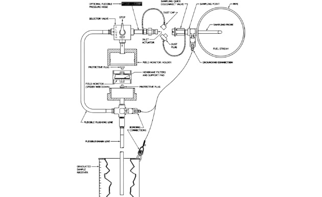

Session 9.5
Membrane Filter Test Procedures

7.5.1 Preparation of the Monitors
- For a Single membrane Colorimetric test, use one membrane of GTP 1983 or equal.
- For a Double membrane Colorimetric test, use two membranes of GTP 1983 or equal.
- For a Gravimetric test, use a matched weight membrane set of GTP 1984 or equal.
- Do not substitute two Colorimetric membranes for a pair of matched weight membranes.
Preparation of the Monitor
If membrane refills are to be used instead of factory fitted membranes (GTP-1985 or GTP-1986), these procedure needs to be followed:
- Select a field monitor capsule and mark it for identification.
- Check that the capsule is clean, dry and in good condition
- Insert a clean support pad (backing pad), in the bottom half of the monitor.
- Using flat bladed forceps carefully place a new, grade AA membrane filter in position on the support pad and reassemble the monitor.
- Double Membrane Colorimetric Testing insert two new, grade AA membrane filters in position on the support pad instead of one.
- Gravimetric testing insert two new factory matched membranes one on top of the other on the support pad
- Ensure that the two halves of the monitor are tight, and the membrane is clamped correctly.
- Make sure connection is hand tight; extreme force is not necessary as the O-rings will create a tight seal.
- Insert protective dust plugs in the monitor and store it in a clean and cool place until needed.
Note – for Gravimetric testing filter membranes can be purchased as ‘matched weights’ so that it is not necessary to know the original weights. When ‘matched weights’ are not used, it will be necessary to weigh both membranes before and after use and to note which membrane is the ‘working’ and which the ‘control’
- Place the top portion of the monitor and press to close.
- Fix the monitor in the kit.
- Ensure that the spoked or grided side of the monitor is fixed on the bottom cap of the millipore kit.
- Note that the O-ring in the bottom cap of the millipore kit is in good condition and seals around the hub of the plastic monitor.
- Screw the bottom cap on the upper housing of the millipore kit hand tight. Overtightening must be avoided.
9.5.2Taking the Sample
- Connect the millipore kit and grounding clip to the sampling adaptor.
- Place the drain tube and connect the bonding clip of the millipore kit into the measuring can.
- Set the sampling kit selector valve in the ‘STOP’ position.
- correct pressure and flow rate for the test.
- The flow through the filter vessel being monitored should be at least 50% of the filter rated flow rate.
- The pressure should be maintained at 30 to 35 psi (2 to 2.4 bar)
- If the pipeline pressure is low, close the downstream ball/gate valve until the pressure increases to at least 35 psi.
 (1) copy.png)
- Once the correct pressure and flow settings have been established, set the selector valve in the ‘FLUSH’ position.
- Allow a minimum of 3 liters to pass into the measuring can to ensure good flushing.
- Set the selector valve to ‘STOP’ position.
- Empty the contents of the measuring can.
- When at least 2-3 litres of fuel have passed through turn the selector valve in the kit to ‘TEST’ mode .
- For lines not equipped with flow rate meters, there might be a need to use and start the stopwatch to determine if the test will be more than THE 50% FILTER-RATED FLOW
- Note down the test rig pressure and the fuel flow rate.
- For those that need to use a stopwatch, stop the timekeeping and take note of the recorded testtime. .
- Sample should be obtained within 2 to 12 minutes (sampling volumes).
- After sampling is completed, allow 1 minute to pass before disconnecting the sampling unit from the sampling connection to allow ELECTROSTATIC charges to dissipate
- Remove the monitor sampling kit from the sampling adaptor
- Open the monitor sampling kit and remove the millipore monitor
- Using the suction device, GENTLY REMOVE the excess fuel from the monitor through the spoked or girded side (outlet) of the monitor without damaging the filter membrane
- CLOSE the inlet and outlet of the monitor with the colored DUST PLUGS
- For Gravimetric test:
- After the TEST is completed, the field monitor is returned, WITHOUT OPENING, to the supervisor for further handling and submission to the qualified laboratory for evaluation laboratory
- Label the monitors
- The final ‘DRY’ ASTM color rating of gravimetric test membranes shall also be recorded in the laboratory report.